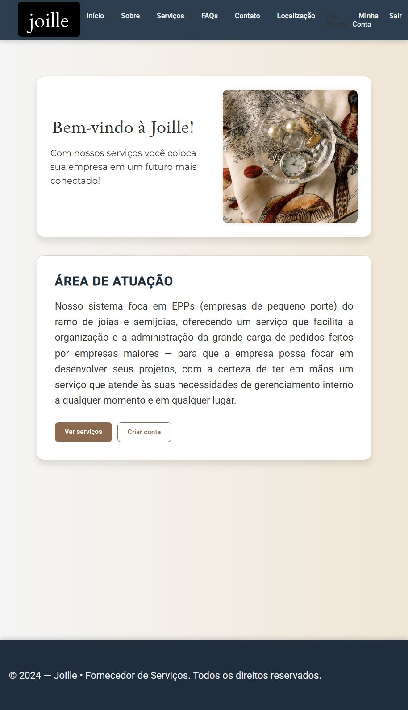
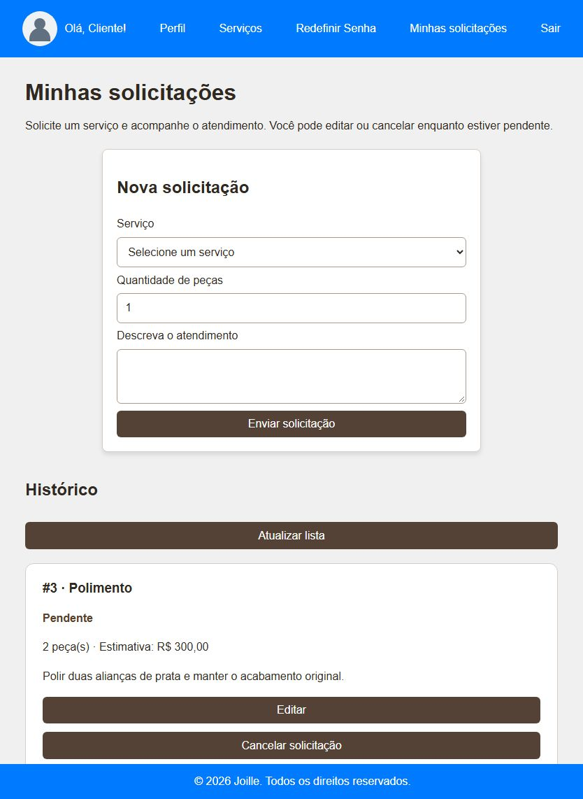
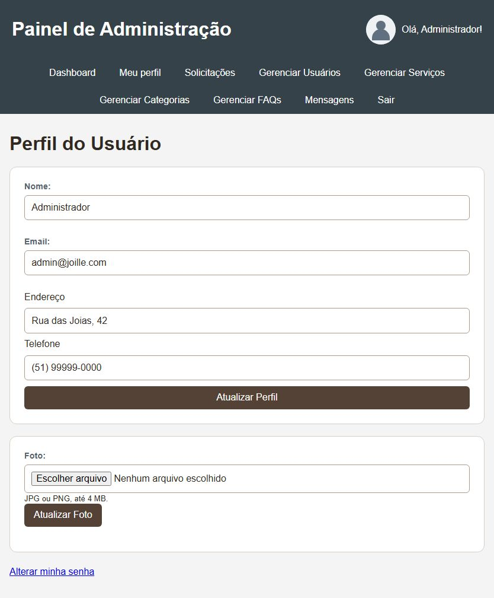

Joille
Catálogo e atendimento para pequenas joalherias e empresas de bijuterias.
Elias Lindner Lanzarin
Gustavo Neumann
Área de atuação e objetivos
Clientes e equipes de pequenas empresas precisam consultar serviços e acompanhar pedidos em um lugar comum.
Centralizar o catálogo e as solicitações de atendimento.
- Organizar serviços, categorias e imagens.
- Registrar pedidos e acompanhar a situação.
- Gerenciar usuários, FAQs e mensagens.
- Fornecer API, indicadores e relatórios PDF.
Área pública
O visitante consulta serviços e FAQs, encontra informações de contato e cria sua conta.
O catálogo e as perguntas são consultados na API.

Área do cliente
O cliente mantém seu perfil e cria, consulta, edita e cancela solicitações pendentes.
O servidor confere o dono de cada solicitação.
Captura após recarregar a página.
Administração do serviço

Perfil próprio, usuários, serviços, categorias e FAQs.
Acompanhamento dos pedidos, galerias, mensagens, gráficos e relatórios PDF.
API para web e mobile
PHP orientado a objetos, MVC, MySQL e JWT. Serviços HTTP reutilizáveis conectam as telas às rotas.
POST /users/login
GET /services/list/paginator/1/10
POST /requests
PUT /requests/{id}
POST /service-images/{serviceId}Imagens em relação 1:N, recebidas como multipart e persistidas no servidor.
Validação e demonstração
140 verificações da API + 91 verificações adicionais de aceite aprovadas.
POO, contratos HTTP, componente de imagens e fluxos no navegador também foram verificados.
Demonstrar: cadastro, solicitação, administração, galeria, relatórios e API.
Slides: até 3 minutos · Demonstração: 5 minutos · Perguntas: 2 minutos.SMTP externo e aplicativo nativo dependem de configuração e do projeto da outra disciplina.